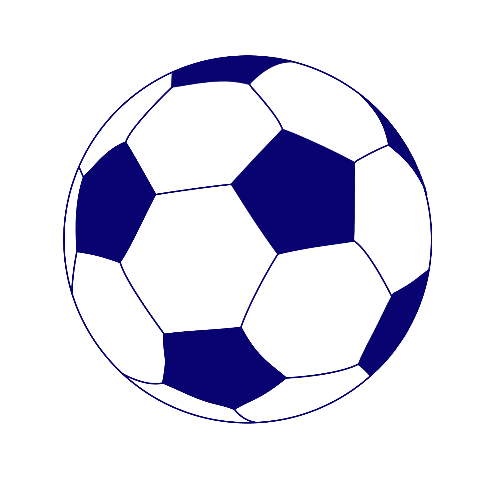

Lionel Andrés Messi Cuccittini
Lionel Andrés Messi Cuccittini (Rosario, 24 de junio de 1987), conocido como Leo Messi, es un futbolista argentino que juega como delantero o centrocampista. Desde 2023, integra el plantel del Inter Miami de la MLS canadoestadounidense. Es también internacional con la selección de Argentina, de la que es capitán. Con el Fútbol Club Barcelona, al que estuvo ligado más de veinte años, ganó 35 títulos, entre ellos, diez de La Liga, cuatro de la Liga de Campeones de la UEFA y siete de la Copa del Rey. Considerado con frecuencia el mejor jugador del mundo y uno de los mejores de todos los tiempos,10 es el único en la historia que ha ganado, entre otras distinciones, ocho veces el Balón de Oro, ocho premios de la FIFA al mejor jugador del mundo, seis Botas de Oro y dos Balones de Oro de la Copa Mundial de Fútbol. En 2020, se convirtió en el primer futbolista y el primer argentino en recibir un premio Laureus y fue incluido en el Dream Team del Balón de Oro.

Orígenes y formación
Lionel Andrés Messi nació el 24 de junio de 1987 en el Hospital Italiano Garibaldi de la ciudad de Rosario, en la provincia de Santa Fe. Es el tercer hijo de Jorge Horacio Messi y Celia María Cuccittini. Tiene dos hermanos mayores, Rodrigo y Matías, y una hermana menor, María Sol.Su familia paterna es originaria del municipio italiano de Recanati, de donde su bisabuelo, Angelo Messi, emigró a Argentina en 1883.Fue su abuela materna, Celia, la que lo alentó a dedicarse al fútbol, por lo que él le agradece señalando al cielo con las dos manos tras convertir un gol.Dos de sus primos (Maximiliano y Emanuel Biancucchi) son también futbolistas.Estudió en la escuela primaria N° 66 "Gral. Las Heras"
Primeros años
Comenzó la pretemporada 2004-2005 jugando amistosos con el primer equipo: ante el Banyoles, el Figueres, el Palamós, el Hércules y el Olympique de Marsella, donde fue titular por primera vez.Contra el Palamós el 20 de julio en el Camp Nou, en el minuto '74, anotó su primer gol, que puso el 0-4 parcial de un partido que el Barcelona ganó 0-6.Participó también en el On Tour Asia, una gira promocional del club por Corea, China y Japón en la que se jugaron cuatro amistosos. Convirtió un gol el 1 de agosto en el 5-0 ante el Kashima Antlers.

En 2022, obtuvo la Finalissima frente a Italia en Wembley y el Mundial de Catar contra Francia en el estadio Lusail, donde contribuyó con siete goles y tres asistencias al título de Argentina y fue nombrado el mejor jugador del torneo, convirtiéndose así en el jugador con más Balones de Oro de la Copa del Mundo.
Siguelo en sus redes sociales: